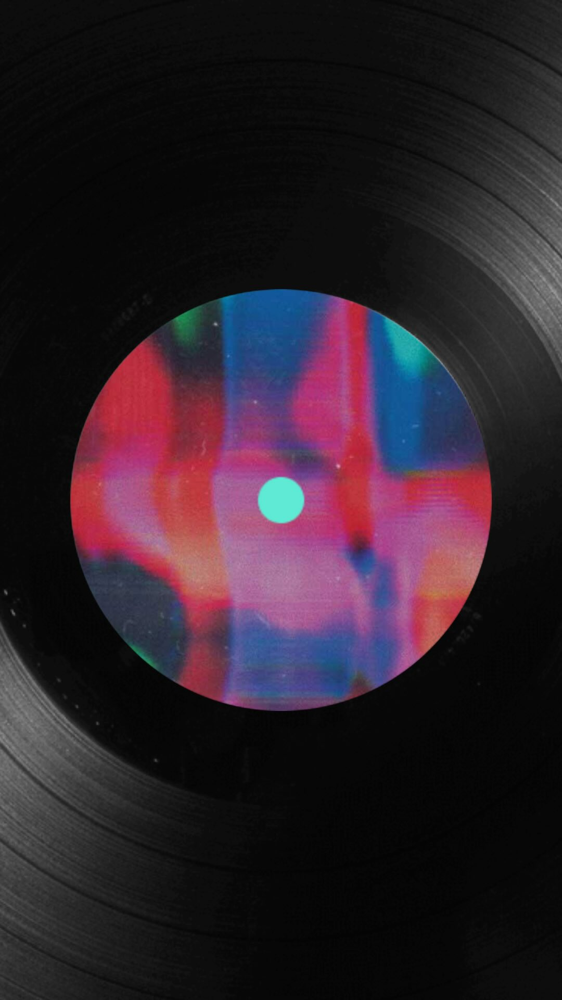

A podcast by two practicing creatives
VariousMethods ofEscape
Long-form conversations about the work, rituals, detours, and obsessions that keep creative people moving.
EnterThe premise
Creativity rarely moves in a straight line. Various Methods of Escape follows the side roads—where a practice begins, what sustains it, and where it goes when no one is watching.
 Artwork courtesy of the guest
Artwork courtesy of the guest
Conversation 001 · Recorded
Erik
Winkowski
Video as collage. Drawing over daily life. The productive tension between a loose sketch and a finished image.
Visit Erik’s studio ↗
Conversation 002 · Upcoming
Kody
Chamberlain
Storytelling, drawing, and the hard-won craft behind making worlds that hold together.
Visit Kody’s studio ↗
Artwork / Lee Martin
Conversation 003 · Upcoming
Lee Martin
Netmaker, musician, and builder of independent things for the internet.
Visit Lee’s world ↗